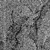

연립선형방정식(simultaneous linear equation)을 풀기 위한 반복 방법은 방정식이 매우 큰 차원이고,
행렬계수가 희소(sparse) 특성일 때, 효과적인 해법이다.
이 방법은 선형적으로 훼손된 영상의 디지털 영상 복원 문제로 적용할 수 있다.
이와 같은 문제에서, 영상 모델은 그림 화소(pixels)의 수와 동일한 수많은 알 수 없는 것을 포함한
거대한 차원의 연립선형방정식으로 표현된다.
그리고, point spread function(PSF)은 행렬계수가 희소 특성을 나타내는 국부처리로 모델화 될 수 있다.
PSF의 국부처리 때문에, 영상복원은 minicomputer–base 영상처리 시스템을 사용하여 실행될 수 있다.
이와 같은 반복 방법의 적용에 의해, 반복 영상 복원 방법의 두가지 방법이 발전해 왔다.
하나는 Jacobi‘s method, 또는 Gauss-Seidel’s method와 같은
정적인 방법(static solution)에 기초를 두고 있는 것이고,
다른 하나는 least squares method에 기초한 gradient method와 같은 동적인 방법(dynamical)이다.
위의 두 방법의 기본적인 차이점은 적절한 수렴과 수렴 방법을 제어하는 가속변수를 결정하는 방법에 있다.
전자의 경우, 가속변수는 반복 처리 과정에서 연산자의 판단에 의해 한 step씩 할당된다. 반면에 후자의 경우,
가속변수는 각 반복 step에서 최적 변수로 자동적으로 결정되어진다.
사전 논문에서 Jacobi‘s method, 또는 Gauss-Seidel’s method에 기초를 둔
반복 영상 복원이 실제 적용에 적절하고, 유용하다는 것을 제시하였다.
여기에서는 gradient method에 의한 반복 영상 복원의 유용성을 나타낸다.
gradient method를 기초로 한 전형적인 예는
conjugate gradient method와 steepest descent method에 의한 반복 영상 복원이다.
이 방법의 특징은, 만약 행렬계수가 positive definite이면, 반복은 유한한 반복 수에서 반드시 수렴하고,
빠른 수렴율을 보장한다는 것이다.
conjugate gradient method가 이론적으로는 steepest descent보다 더 뛰어나지만,
반복 영상 복원에 대한 이 방법의 적용은 실제 사용에 반드시 유리한 것은 아니다.
Iterative image resroration by the method of Steepest Decent
영상의 유한한 확장과 훼손 PSF를 가정하면,
비간섭성(incoherent)의 영상 시스템에서 선형적으로 훼손된 영상의 이산모델은 다음과 같다.
inm = ∑Nn'=1∑Nm'=1hnmn'm'on'm'+nnm n=1,2,3,...N m=1,2,3,...M ---(1)
여기서 {inm}, {hnm} , {onm} 은
각각 degraded image, PSF, original object, additive noise이다.
식(1)은 다음과 같이 행렬의 형태로 다시 쓸 수 있다.
i = Ho + n -------(2)
벡터 i ,o , n 은 NM요소로 구성되어 있고, 행렬 H는 NM×NM배열을 가진다.
영상 복원 문제의 기본은 주어진 i, H에 대해
가장 적절한 o를 추정하는 것이다. 만약, 잡음이 무시된다면,
이 문제는 연립 선형 방정식의 해를 구하는 것이다.
식(2)의 해를 구하기 위한 직접적인 접근은 큰 메모리 용량과 많은 계산 시간의
요구 때문에 noble method가 반드시 필요한 것은 아니다.
영상 복원의 대부분의 문제에서, 훼손 특징을 가지는 행렬 H 는 희소(sparse) 특성을 가진다.
다시 말해서, 훼손 PSF는 국부(local) 분포를 보인다.
least squares method에 기초를 둔 gradient method에 의한 하나의 유효해는 하나이다.
gradient method에 의한 영상 복원의 기초는 오차 함수를 최소화하는 가장 좋은 추정치를 구하는 것이다.
Φ(o) = |i - Ho|2 (3)
여기에서 |ㆍ|는 weighted norm을 의미한다.
|i|2 = (i, Wi) (4)
W는 가중 행렬(weighted matrix)이고, (,)는 inner product를 표시한다.
gradient method에 의한 반복 영상 복원에서 k번째 반복해는 일반적으로 (5)(6)에 의해 주어진다.
ô(k+1) = ô(k) + αkP(k) (5)
여기에서 αk와 P(k)는 k번째 step에서 가속변수와 복원 벡터이다.
주어진 P(k)에서 최적 계수αk 는 방정식의 해에 의해 자동적으로 결정된다
(d/dαk)Φ(ô(k)) + αkP(k)) = 0 (6)
만약, HtWH가 양(positive)로 정의되면, 최적 계수는 다음과 같이 주어진다.
αk = (r(k),WHP(k))/(P(k),HtWHP(k)) (7)
여기에서 r(k)=i-Hô(k)(≠ 0)이고, 첨자 t는 전치를 의미한다.
벡터 ô(k)가 복원 벡터 αkP(k)에 의해 보정될 때,
오차함수의 양은 다음에 의해 구하여진다.
Φ(ô(k))- Φ(ô(k)+ αkP(k))= (p(k),HtWr(k))2/(P(k),HtWHP(k)) > 0 (8)
HtWH가 양(positive)로 정의될 때, 식(8)의 관계는 반복 수렴을 의미한다.
복원 벡터 P를 정의하는 다양한 방법이 존재한다.
가장 간단한 접근은 steepest descent방법을 사용하는 것이다.
이 방법에서 복원 벡터 p를 다음과 같이 선택한다.
P(k) = -1/2 gradΦ(ô(k)) = HtWr(k) (9)
식(9)를 식(7)에 대입하면,
αk = (P(k),P(k))/(P(k),HtWHP(k)) (10)
steepest descent method에 의한 반복 영상 복원의 실제 알고리즘과
상호 작용하는 방법에 의한 처리 절차는 다음과 같다.
1. 초기 추정을 다음과 같이 둔다. ô(0)=i
2. 초기 복원 벡터를 계산한다. P(0)=HtW|i-Hô(0)|
3. 최적 계수를 계산한다. αk = (P(k),P(k))/(P(k),HtWHP(k))
4. 다음과 같이 k번 반복에서 추정치를 구한다. ô(k+1)=ô(k)+αkP(k)
5. 결과를 관찰한다. 결과가 원하던 것이면, 반복을 그만둔다.
그렇지 않으면, 다음 step으로 간다.
6. 다음을 계산한다. P(k+1)=P(k)-αkHtWHP(k)
7. k→k+1 을 하고, 3으로 간다.
위의 절차에서, 복원 벡터 P는 식(9)에 의해서가 아니라,
처리하는 동안 사용된 메모리 기억장소를 줄이기 위해
식(9)를 변형한 step 6의 관계에 의해 계산된다.
행렬 H의 희소(sparse) 특성 때문에,
step 3과 6에서 행렬 H에 관한 행렬 곱은 짧은 시간의
공간영역에서 컨벌루션(convolution)으로 계산할 수 있다.
그래서, 이 알고리즘은 ô(k) ,P(k) , αkHtWHP(k)를
기억하기 위해 대략 3frames의 메모리 기억장소가 필요하다.
가중된 행렬 W는 행렬 HtWH를 양(positive)로 정의하는 방법으로 선택된다.
그것은 훼손 특성과 일치하는 것으로 할당되어야 한다.
만약, 광학 전달함수가 음(negative)의 성분을 가지지 않는 훼손으로 관계되고,
방사상으로 대칭이면, W=H-1로 둔다. H-1는 H의 역행렬을 의미하므로,
알고리즘에서 step3과 6의 항인 αkHtWHP(k)는 αkHtP(k)로 줄인다.
이것은 하나의 2-D 컨벌루션(convolution)의 계산으로 이끈다.
만약, 광학 전달 시스템이 선형 motion이나 큰 defocusing인 경우처럼, negative성분을 가진다면, W=I로 놓는다.
I는 단위 행렬이다.
그러면, αkHtWHP(k)인 항은 αkHtP(k)가 된다.
이것은 2개의 2-D 컨벌루션(convolution)의 계산을 요구한다.
Reference
[1] KAWATA (S.), ICHIOKA (Y.), SUZUKI(T.). – Proc. 4th International Joint Conference on Pattern
Recognition, Kyoto, 1978, p. 525.
[2] VAN VEEN (T. M.) GROEN (F. C. A.), VERBEEK (P. W.). – Proc. 4th International Joint Conference
on Pattern Recognition, Kyoto, 1978, p. 505.
[3] KAWATA (S.), ICHIOKA (Y.). – J. Opt. Soc. Amer. (in press). [4] KAWATA (S.), ICHIOKA (Y.).
– J. Opt. Soc. Amer. (in press). [5] ANGEL (E. S.), JAIN (A. K.). – Appl. Opt., 1978, 17, 2168.

|
|
|
원 영상
|
blur영상
|
|
|
|
|
10dB 잡음 영상
|
10dB 잡음 blur영상
|
|
|

|
|
blur 영상 복원 (3회)
|
blur 영상 복원 (50회)
|

|

|
|
10dB 잡음 영상 복원 (1회)
|
10dB 잡음 영상 복원 (50회)
|
|
|
|
|
10dB 잡음 blur 영상 복원 (3회)
|
10dB 잡음 blur 영상 복원 (50회)
|